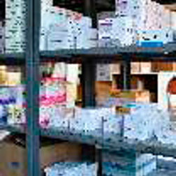
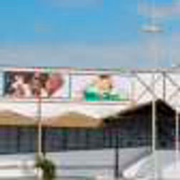
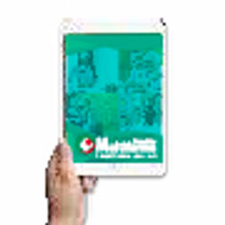

A Farmácias Multifarma é uma rede com experiência no ramo de drogarias desde 2004. Atuamos em grandes centros comerciais de Salvador e Lauro de Freitas, estando presentes nas lojas Hiperideal, Centro Sul, NovoMix, Multishop e Graça. Possuímos programas de fidelização próprios, como nosso Cartão de Descontos, bem como programas de desconto da indústria farmacêutica (PBM).
Participamos do programa do governo federal ‘Aqui Tem Farmácia Popular’. Somos filiados à FEBRAFAR (Federação Brasileira de Farmácias) e associados à BoaFarma, que representa 104 lojas em todo o estado. Em 2018, estamos buscando novas oportunidades em grandes shoppings e lojas de rua para diversificarmos as nossas ações e campos de atuação.
Nossa intenção para 2018 é a abertura de novas lojas, que agregarão um crescimento ao grupo em torno de 40%, tendo como projeção de venda o valor de R$ 800 mil por loja. Sempre buscando novas estratégias e focando em atendimento de qualidade e mix de produtos, somos diretamente competitivos em relação às maiores empresas nacionalmente conhecidas no ramo de drogarias e farmácias.
As Farmácias Multifarma é uma Rede baiana em constante crescimento, vem conquistando os baianos desde a sua fundação em 2004, com atuação no mercado de Salvador e Região Metropolitana. Têm 14 anos de atuação no setor, suas lojas são modernas e referência onde estão presentes. Lojas localizadas em bairros estratégicos de Salvador e Lauro de Freitas. Ainda este ano teremos inauguração de novas lojas, com um conceito boutique.
Início das atividades, no ramo de drogarias.
Crescimento no faturamento constante, possibilita abertura de novas lojas.

Abertura de mais uma filial.
Investimento em treinamentos e atendimento personalizado.
Fortalecimento da Área Comercial com a entrada de novas indústrias e renegociação das condições comerciais.

Abertura de Loja em grandes Mercados.
Centralização e Fidelização dos Clientes com Cartão.

Ativação da marca nos meios: Digitais Padronização da Identidade Visual das lojas Ampliação da Rede.
Novas lojas, Gestão de Sortimento, Gestão de Priecing, Marketing - Inclusão de Novas Mídias. Inauguração de Lojas Boutique.